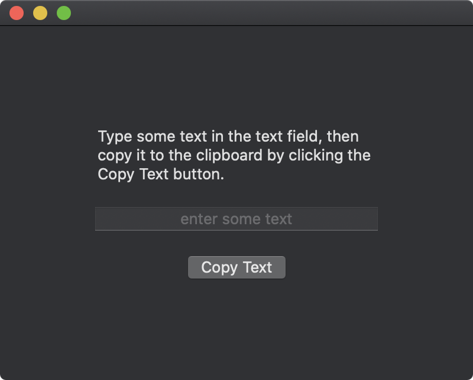

The typical way to copy text is to select it with the mouse then press ⌘C. To do this in code, use the NSPasteboard class to transfer text to the pasteboard server.

import SwiftUI
struct ContentView: View {
@State private var name = ""
var body: some View {
VStack(spacing: 20) {
Text("Type some text in the text field, then copy it to the clipboard by clicking the Copy Text button.")
TextField("enter some text", text: $name)
.multilineTextAlignment(.center)
Button("Copy Text") {
let pb = NSPasteboard.general
pb.clearContents()
pb.setString(self.name, forType: .string)
}
}
.padding(80)
.frame(width: 400, height: 300)
}
}
Gavin Wiggins © 2024